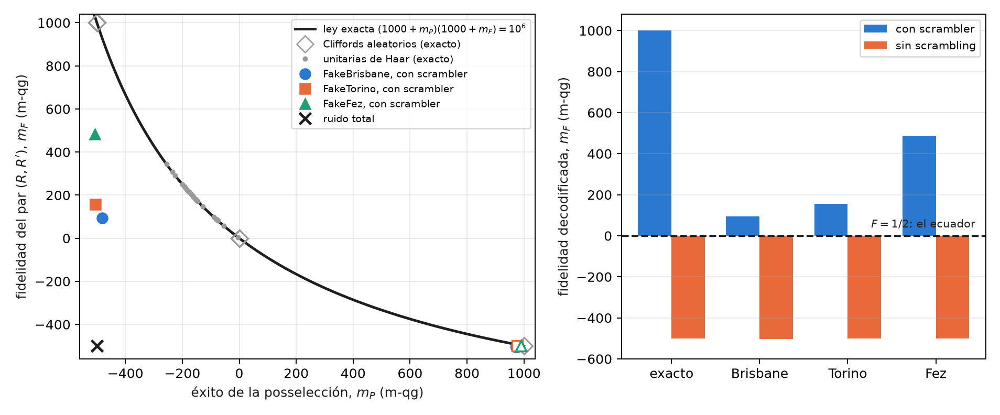
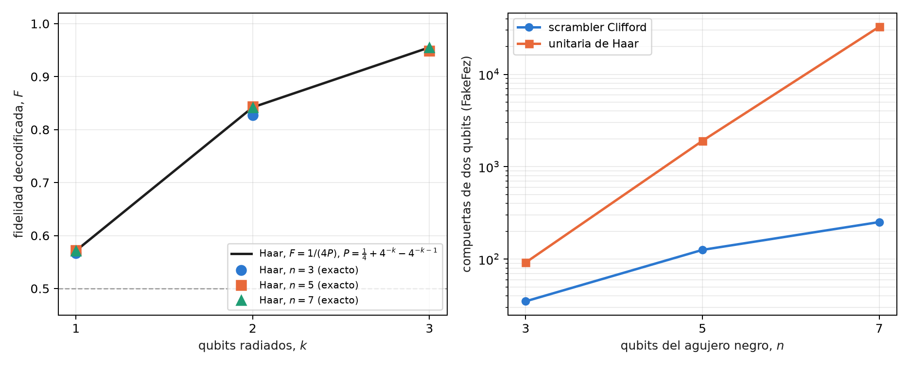
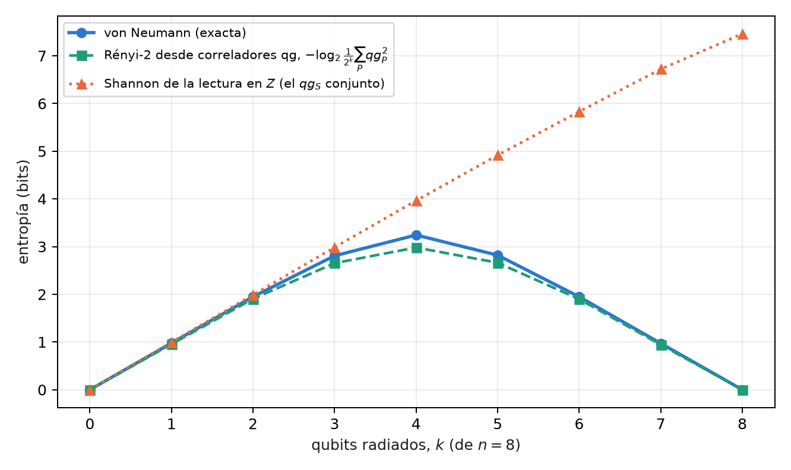

15 Termodinámica de agujeros negros, caos cuántico y el decodificador de Yoshida–Kitaev
Este es el segundo modelo de la Parte V, y vale la misma advertencia que en el capítulo 14: es un modelo de teoría de la información, no una afirmación sobre agujeros negros reales (§164). Un agujero negro de pocos qubits, una unitaria que esparce la información y una teleportación con posselección sobre un resultado de Bell: el mismo filtro sobre el sector de Bell del capítulo anterior, ahora puesto a recuperar un mensaje que cayó al horizonte.
15.1 Desde la base: éxito 1/4 y el ecuador de la fidelidad
El protocolo produce dos números, y los dos son probabilidades, de modo que la ecuación de probabilidad del capítulo 1 los lee directamente. La posselección tiene éxito con probabilidad \(P=1/4\): su lectura es \(m_P=1000(2P-1)=-500\) y su ángulo qang \(\arccos(-1/2)=2\pi/3\). La fidelidad \(F\) del par recuperado con un par de Bell es la probabilidad de que la medición de Bell dé su resultado trivial, y se lee igual, \(m_F=1000(2F-1)\).
La escala tiene aquí una virtud concreta: el umbral que importa cae en el ecuador. Una fidelidad de Bell mayor que \(1/2\) certifica entrelazamiento, y \(F=1/2\) es \(m_F=0\). Sin scrambling, el par sale máximamente mezclado, \(F=1/4\), y lee \(-500\); con scrambling, \(F=1\), y lee \(1000\). Decodificar es cruzar el ecuador.
15.2 La paradoja de la información y la complementariedad
Hawking (1976) mostró que un agujero negro radia con espectro térmico, y que la radiación no parece depender de lo que cayó adentro. Si el agujero se evapora por completo, un estado puro terminaría en uno mixto: la evolución no sería unitaria. La complementariedad (Susskind, Thorlacius y Uglum, 1993) y, sobre todo, el argumento de Page (1993) llevaron a la posición contraria, hoy mayoritaria: la información sale en la radiación, codificada en correlaciones finas.
Hayden y Preskill (2007) preguntaron cuándo sale. Su respuesta, para un agujero negro que ya pasó la mitad de su vida y cuya dinámica esparce la información rápido, es “casi enseguida”: un mensaje de pocos qubits arrojado al agujero puede reconstruirse con apenas unos qubits más de radiación, si se tiene la radiación temprana. Yoshida y Kitaev (2017) dieron un decodificador explícito, y es el que se corre en este capítulo.
15.3 Scrambling: un micro-agujero negro de 3 qubits
El agujero negro de juguete tiene 3 qubits: el mensaje \(A\) y dos qubits \(B_1,B_2\) que ya estaban adentro. Su dinámica es una unitaria \(U\) sobre los tres, y que \(U\) “esparza la información” tiene una definición operativa: todo operador de Pauli de un qubit termina, después de \(U\), actuando sobre los tres qubits. Para un Clifford se verifica sin aproximaciones, evolucionando los 9 Paulis \(X,Y,Z\) de cada qubit. find_scrambler toma el primer Clifford aleatorio (semilla 164) que cumple la condición, y sus 9 Paulis tienen peso 3.
El scrambling es la versión cuántica del caos: un error local (un Pauli) se vuelve, después de la dinámica, un error de todo el sistema, y ninguna medición de un qubit lo detecta. Por eso no sorprende que un agujero negro “oculte” el mensaje, y por eso sí sorprende que se pueda recuperar.
15.4 El protocolo de Hayden–Preskill y el decodificador
El circuito tiene 8 qubits. El mensaje \(A\) está entrelazado con una referencia \(R\), que es quien lo arroja; el agujero negro \(B\) está entrelazado con la radiación temprana \(B'\), en manos del observador exterior. Después de \(U\) sobre \((A,B_1,B_2)\), un qubit \(D\) (la salida de \(B_2\)) se radia. El observador tiene \(D\) y \(B'\), y además prepara una copia del experimento: un par \((A',R')\) y la unitaria conjugada \(U^*\) sobre \((A',B'_1,B'_2)\). Luego posselecciona \((D,D')\) sobre el estado de Bell. Si tiene éxito, el entrelazamiento de \(A\) con \(R\) pasó a \(R'\): el mensaje se teleportó desde el interior.
Para un scrambler, la posselección tiene éxito con probabilidad \(1/d_A^2=1/4\) y la fidelidad del par \((R,R')\) es 1. Sin scrambling (\(U=I\)), la posselección casi siempre tiene éxito, porque \(D\) no lleva nada de \(A\), y la fidelidad es la de un par al azar, \(1/4\). La posselección es, como en el capítulo 14, un filtro sobre el sector de Bell de \((D,D')\).
15.5 La ley exacta \(P\cdot F=1/4\)
Esta sección es nueva en el libro. En el decodificador probabilístico de Yoshida y Kitaev, el éxito y la fidelidad no son independientes:
\[ P\,F=\frac{1}{d_A^{2}}=\frac14 . \]
El script de figuras lo verifica en estado exacto sobre 60 Cliffords aleatorios y 25 unitarias de Haar de 3 qubits, y en todos los tamaños de la sección siguiente: en 3 qubits la desviación máxima es \(3\times10^{-16}\). En la escala del capítulo 1 la ley es una hipérbola,
\[ (1000+m_P)(1000+m_F)=10^{6},\qquad\text{o bien}\qquad \cos\frac{\theta_P}{2}\,\cos\frac{\theta_F}{2}=\frac12 , \]
y tiene una consecuencia práctica: sin ruido, el éxito ya dice la fidelidad. Un éxito de \(1/4\) (\(m_P=-500\)) exige \(F=1\); un éxito de 1 (\(m_P=1000\)) exige \(F=1/4\). Entre los Cliffords aleatorios de 3 qubits, 27 de 60 decodifican perfecto.
Con ruido la ley se rompe, y en qué dirección se rompe es lo que la vuelve útil. El ruido total lleva a \((D,D')\) al estado mezclado, cuyo éxito es también \(1/4\), con \(F=1/4\): el éxito solo no distingue un decodificador perfecto de uno destruido por el ruido. El producto sí: \(4PF\) vale 1 en el primero y \(1/4\) en el segundo.
15.6 En modelos de ruido simulados
Con 8000 disparos en tres modelos de ruido simulados (§164), el circuito con scrambler, 90 compuertas de dos qubits después de transpilar, da:
| dispositivo simulado | éxito \(P\) (\(m_P\)) | fidelidad \(F\) (\(m_F\)) | \(4PF\) | sin scrambling: \(F\) (\(m_F\)) |
|---|---|---|---|---|
| exacto | 0,250 (−500) | 1 (1000) | 1 | 0,250 (−500) |
| FakeBrisbane | 0,260 (−481) | 0,547 (93) | 0,568 | 0,248 (−504) |
| FakeTorino | 0,248 (−504) | 0,578 (156) | 0,573 | 0,250 (−501) |
| FakeFez | 0,246 (−508) | 0,742 (484) | 0,731 | 0,250 (−500) |

Las tres corridas con scrambler cruzan el ecuador (H3), y el éxito queda a menos de 0,05 de \(1/4\) (H2). Pero la Figura 15.1 muestra por qué H2 no es evidencia de decodificación: el éxito de los tres dispositivos es el mismo que daría el ruido total. Lo que separa a FakeFez de los otros dos es la fidelidad, y \(4PF\) lo resume en un número: 0,73 contra 0,57. La predicción H1 (ventaja de fidelidad mayor que 0,3 sobre el caso sin scrambling en los tres) falló por 0,001 en FakeBrisbane.
15.7 Agujeros negros más grandes
Esta sección también es nueva: estados exactos, conteo de compuertas y una simulación con el modelo de ruido de FakeFez, sin corrida en dispositivos. El circuito se generaliza a un agujero negro de \(n\) qubits con \(k\) qubits radiados: \(2n+2\) qubits en total, 16 para \(n=7\).
Dos resultados ordenan el tema. El primero: con un solo qubit radiado, un agujero negro genérico no alcanza. Para una unitaria de Haar el éxito promedio es \(P\approx\tfrac14+4^{-k}-4^{-k-1}\), y por la ley, \(F=1/(4P)\): con \(k=1\), \(F\approx4/7=0{,}57\), apenas arriba del ecuador, sea \(n=3\), 5 o 7. Hay que radiar algo más que el mensaje: con \(k=2\), \(F\approx0{,}84\); con \(k=3\), \(F\approx0{,}95\) (Figura 15.2, izquierda). Es la versión cuantitativa de “unos qubits más” de Hayden y Preskill. El scrambler Clifford de 3 qubits, con \(F=1\) y \(k=1\), es un caso especial, no el típico.
El segundo: el costo en compuertas separa los dos tipos de scrambler. Un scrambler Clifford se transpila como circuito Clifford: 35, 126 y 252 compuertas de dos qubits para \(n=3\), 5 y 7. Una unitaria de Haar se sintetiza como unitaria genérica, y su costo crece como \(4^n\): 92, 1908 y 32 680 (Figura 15.2, derecha). Hay además una lección para la corrida de la §164: el mismo scrambler de 3 qubits, pasado al transpilador como matriz, se sintetizó con 90 compuertas; pasado como Clifford, con 35, y en el modelo de FakeFez la fidelidad sube de 0,742 a 0,887 (simulación nueva con otra semilla, no la corrida guardada).
| agujero negro | qubits radiados | compuertas de dos qubits (FakeFez) | éxito en FakeFez (exacto 0,25) | \(F\) en FakeFez (\(m_F\); exacta 1) | \(4PF\) en FakeFez |
|---|---|---|---|---|---|
| 3 qubits | 1 | 35 | 0,253 | 0,887 (773) | 0,899 |
| 5 qubits | 2 | 126 | 0,191 | 0,802 (605) | 0,613 |
| 7 qubits | 3 | 252 | 0,105 | 0,882 (764) | 0,370 |

La Tabla 15.2 muestra hasta dónde llega el filtro. La fidelidad se mantiene entre 0,80 y 0,89 aun con 252 compuertas, y no porque el ruido no actúe: la posselección sobre \(k\) pares de Bell descarta los disparos en los que el ruido tocó a \((D,D')\), y con más pares descarta más. El éxito cae de 0,253 a 0,105 frente al \(1/4\) exacto (con ruido total sería \(4^{-k}\), \(1/64\) para \(k=3\)). La fidelidad sola diría que el decodificador de 7 qubits es tan bueno como el de 3; \(4PF\) dice que entrega 0,37 de lo que debería, porque paga en disparos lo que la fidelidad no muestra. Es la regla de los filtros de sector de los capítulos anteriores: el filtro mejora lo que queda a costa de la tasa, y \(4PF\) pone las dos cosas en un número. Con ruido, la ley se rompe ahora por el otro lado: en 3 qubits cae la fidelidad, en 7 cae el éxito.
15.8 La curva de Page en juguete
Page (1993) predijo cómo crece el entrelazamiento de la radiación de un agujero negro que se evapora unitariamente: sube mientras la radiación es la parte menor, llega a su máximo cuando se radió la mitad, y baja a cero al final, porque el estado total es puro. Un juguete exacto: un estado de Haar de 8 qubits, con los primeros \(k\) como radiación.
El índice proponía leer esta curva con \(qg_S\). No funciona, y conviene decir por qué. \(qg_S\) es la entropía de Shannon de una lectura en \(Z\), y un estado aleatorio se ve al azar en cualquier base: la lectura conjunta de los \(k\) qubits radiados tiene entropía cercana a \(k\) en toda la evaporación, también cuando la radiación ya es casi pura (Figura 15.3, triángulos). Es el límite que ya documenta qang.circuits con los estados de grafo como contraejemplo: \(qg_S\) depende de la base y no mide entrelazamiento.
Lo que sí funciona usa las mismas lecturas qg, al cuadrado. La pureza de la radiación es la suma de los cuadrados de sus correladores de Pauli,
\[ \operatorname{Tr}\rho^{2}=\frac{1}{2^{k}}\sum_{P\in\{I,X,Y,Z\}^{k}}qg_P^{\,2}, \]
y \(S_2=-\log_2\operatorname{Tr}\rho^2\), la entropía de Rényi de orden 2, es una cota inferior de la de von Neumann que sigue la curva de Page: en \(k=4\), la mitad, \(S_2=2{,}98\) bits contra \(S=3{,}24\), y las dos vuelven a cero en \(k=8\), mientras la entropía de Shannon de la lectura en \(Z\) llega a 7,46. El costo es la cara desfavorable: \(4^k-1\) correladores, 255 para \(k=4\). (El script la calcula desde los correladores hasta \(k=4\); más allá usa \(\operatorname{Tr}\rho^2\) directamente, que es la misma cantidad.)

15.9 Agujeros de gusano atravesables
El decodificador de Yoshida–Kitaev es, en circuito, el mismo protocolo que en la literatura holográfica se llama teleportación por un agujero de gusano atravesable (Gao, Jafferis y Wall, 2017; Maldacena, Stanford y Yang, 2017): dos sistemas entrelazados, una dinámica de scrambling en cada uno (la de un lado conjugada) y un acoplamiento entre ellos que deja pasar un qubit. La conjetura ER = EPR (Maldacena y Susskind, 2013) propone que esos pares entrelazados son, en una teoría gravitatoria dual, un puente de Einstein–Rosen. El circuito no decide nada de eso; sí permite leer el resultado con las herramientas de este libro.
La fidelidad del par recuperado es lineal en tres correladores qg, como en el capítulo 13:
\[ F=\frac{1+qg_{XX}-qg_{YY}+qg_{ZZ}}{4}. \]
En estado exacto, con scrambler, \((qg_{XX},qg_{YY},qg_{ZZ})=(1,-1,1)\) y \(F=1\); sin scrambling, \((0,0,0)\) y \(F=1/4\). El experimento de Jafferis y colaboradores (2022) en un procesador de Google usó un modelo de 7 qubits aprendido para imitar esta física, y su interpretación como agujero de gusano fue discutida (Kobrin y colaboradores, 2023). Este libro no corre ese experimento; la lectura en correladores queda como herramienta, no como evidencia.
15.10 Lo que queda pendiente
Ninguno de los resultados nuevos de este capítulo (la ley \(PF=1/4\) como diagnóstico, los agujeros negros de 5 y 7 qubits, la curva de Page con correladores) tiene corrida en dispositivos. Una corrida en hardware real del decodificador de 3 qubits, con 90 compuertas de dos qubits, sería el siguiente paso y tiene costo en créditos; queda fuera de este libro por ahora.
15.11 Sin qang y con qang
| acción | sin qang | con qang | diferencia |
|---|---|---|---|
| decidir si el mensaje se recuperó | comparar \(F\) con 1/2 | el signo de \(m_F\): decodificar es cruzar el ecuador | unidad: el umbral queda en cero, pero es el mismo umbral |
| juzgar la calidad del decodificador | \(P\) y \(F\) por separado | la ley \((1000+m_P)(1000+m_F)=10^6\) y su resumen \(4PF\) | a favor, con matiz: la ley es de Yoshida y Kitaev, no de qang; la escala la vuelve una hipérbola legible y muestra que \(m_P=-500\) no prueba nada |
| prever cuánta radiación hace falta | la fórmula de Haar | la misma fórmula, \(F=1/(4P)\) | ninguna |
| la curva de Page | entropía de von Neumann por tomografía | \(qg_S\) en \(Z\) | en contra: \(qg_S\) no ve la curva |
| la curva de Page, otra vez | tomografía | Rényi-2 desde la suma de \(qg_P^2\) | equivalente: es tomografía de Pauli escrita en qg, con su costo \(4^k-1\) |
| la fidelidad del agujero de gusano | medición de Bell del par (una configuración) | tres correladores qg | ninguna en costo, porque la medición de Bell ya da \(F\); a favor como diagnóstico: los tres correladores dicen qué componente falla |
| reducir el ruido | — | la posselección es el filtro; la escala no agrega nada | ninguna |
Balance. El aporte más claro de qang en este capítulo es de lectura: la ley exacta del decodificador se vuelve una curva en el plano de las dos lecturas, y en ese plano se ve de inmediato que el éxito correcto no es evidencia de decodificación. Donde el índice prometía más, la curva de Page con \(qg_S\), el resultado es negativo, y lo que la reemplaza es tomografía de Pauli, no una propiedad de la escala.
15.12 En código
from qiskit.quantum_info import Statevector
from qang import postselection as ps
scr = ps.find_scrambler() # Clifford de 3 qubits, semilla 164
qc = ps.yk_decoder_circuit(scr, measure=False) # 8 qubits: R, A, B1, B2, B1', B2', A', R'
probs = Statevector(qc).probabilities_dict()
ps.yk_from_counts({k: round(1e6 * v) for k, v in probs.items()})
# {'success': 0.25, 'fidelity': 1.0}: P F = 1/415.13 Resumen
- El decodificador de Yoshida–Kitaev es teleportación con posselección sobre el sector de Bell de un qubit radiado y su copia: un modelo de información, no de gravedad.
- En la escala del capítulo 1, el éxito \(1/4\) es \(m_P=-500\) y la fidelidad que certifica la recuperación, \(F>1/2\), es \(m_F>0\): decodificar es cruzar el ecuador.
- La ley exacta \(PF=1/4\) es una hipérbola en m-qg; con ruido, el éxito sigue en \(1/4\) pero la fidelidad cae, y \(4PF\) (0,57–0,73 en tres modelos simulados) mide la calidad del decodificador.
- Con un solo qubit radiado, un agujero negro genérico da \(F\approx0{,}57\); hacen falta 2 o 3 qubits radiados para \(F\approx0{,}84\)–\(0{,}95\).
- Un scrambler Clifford cuesta 35, 126 y 252 compuertas de dos qubits en 3, 5 y 7 qubits; con 7, la fidelidad en FakeFez sigue en 0,88 pero el éxito cae a 0,105 y \(4PF\) a 0,37: el filtro conserva la calidad y cobra en tasa.
- \(qg_S\) no ve la curva de Page; la Rényi-2 desde los correladores qg sí, al costo de \(4^k-1\) lecturas.